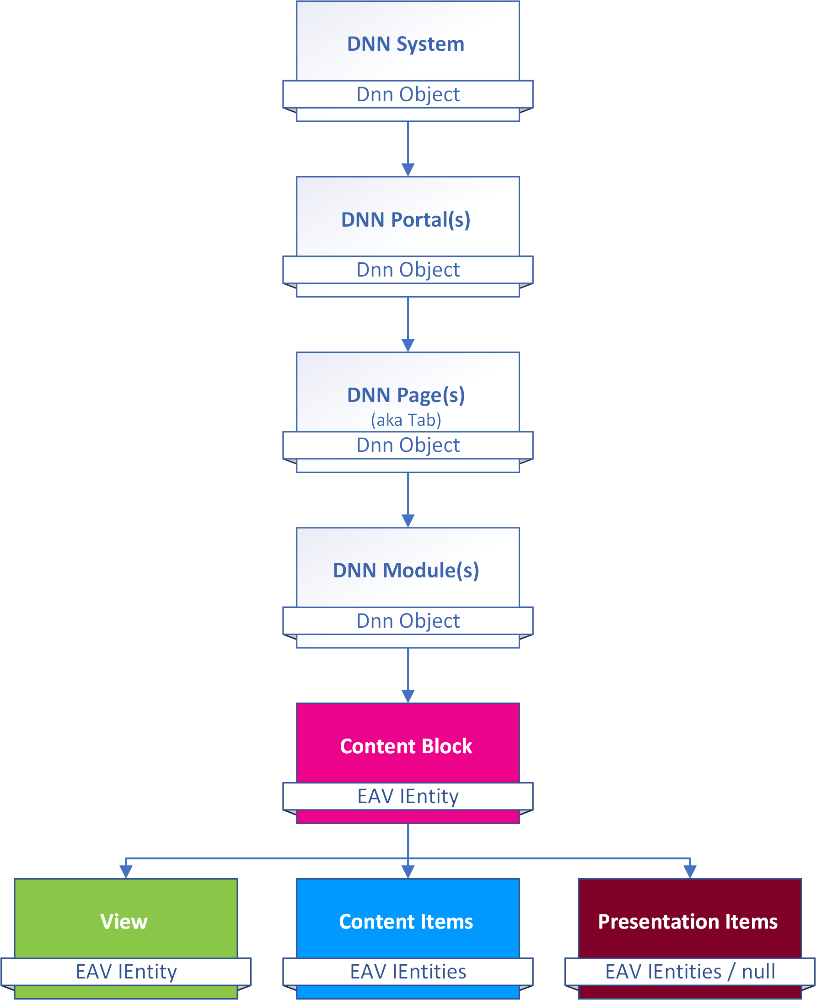
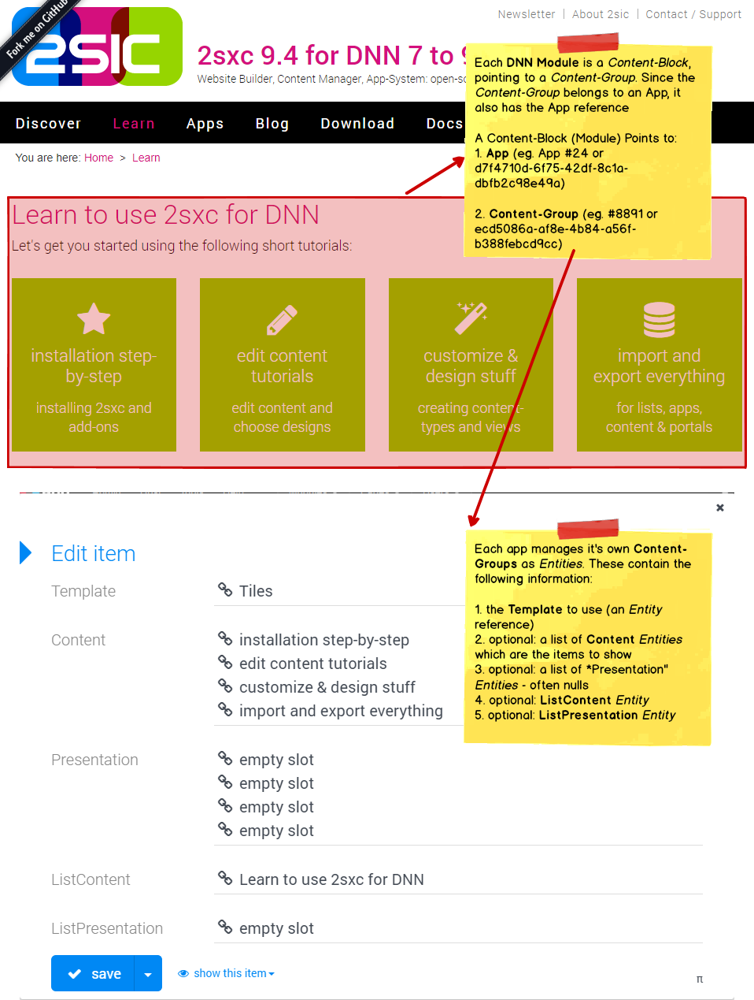

2sxc Content in Dnn
The vision of 2sxc is to be cross-platform, so we hope one day it will also run on NopCommerce and other systems. This is how it's integrated into Dnn.
What Dnn References to
Portal to ZoneId Mapping
The EAV has a virtual container called a Zone which is similar to a Portal in Dnn. The IDs will not match though, so each Portal has a setting called ToSIC_SexyContent_ZoneID which contains the ZoneId for that portal.
When 2sxc is used the first time on a portal, it will detect a missing ZoneId, which triggers zone creation and sets this value.
Module-Installation to App-Installation Mapping
A Dnn Module installation corresponds to an App installation. Internally there is no mapping, as it is not necessary.
There is an important difference though: in Dnn, each installed Module is installed at the System level, so installed Modules are available on all Portals. On the other hand, Apps are installed at the Zone (Portal) level, so each app is only available on that portal. Customizations to the app also only affect that portal, and each Portal could have the same App installed in different versions.
Note
Technically there are a few ways to share Apps, their data, templates etc. across Portals, but these are fairly advanced scenarios.
Module-On-Page to ContentBlock Mapping
In Dnn each modules has Module Settings to store configuration. 2sxc stores these two pieces of information in the Module Settings:
- App ID - what app is being shown here
- Content Block ID - the GUID of the Content Block Entity containing the rest of the configuration
Understanding how this ties in helps you make better decisions. Make sure you also read Content - Data made Useful
Basic Setup: Content is assigned to the module
This is the most common setup - and used in the Content module as well as in many App modules, which rely on the author to manually create content for this specific module. It's not usually used in data-oriented modules like news, blogs, etc.
Here is how it's mapped:
Also Read about Content Data Model
- Best also read about Content - Data made Useful in general.
- Blog about the internals of modules and content
History
- Introduced in 2sxc 6, previously it was handled a bit differently
- 2sxc 11.02 added a feature to see where views are in use